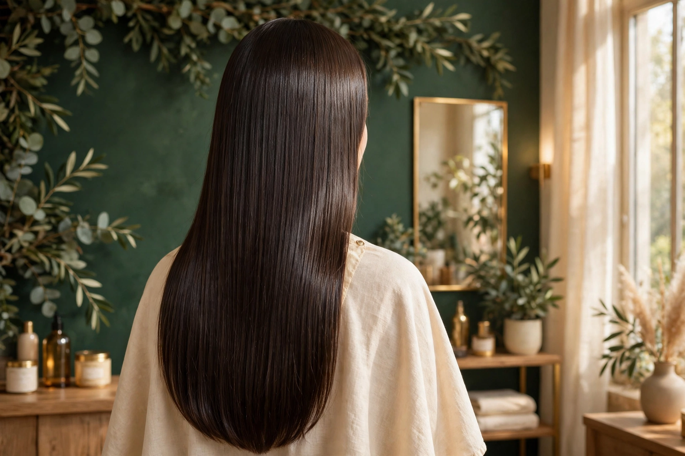
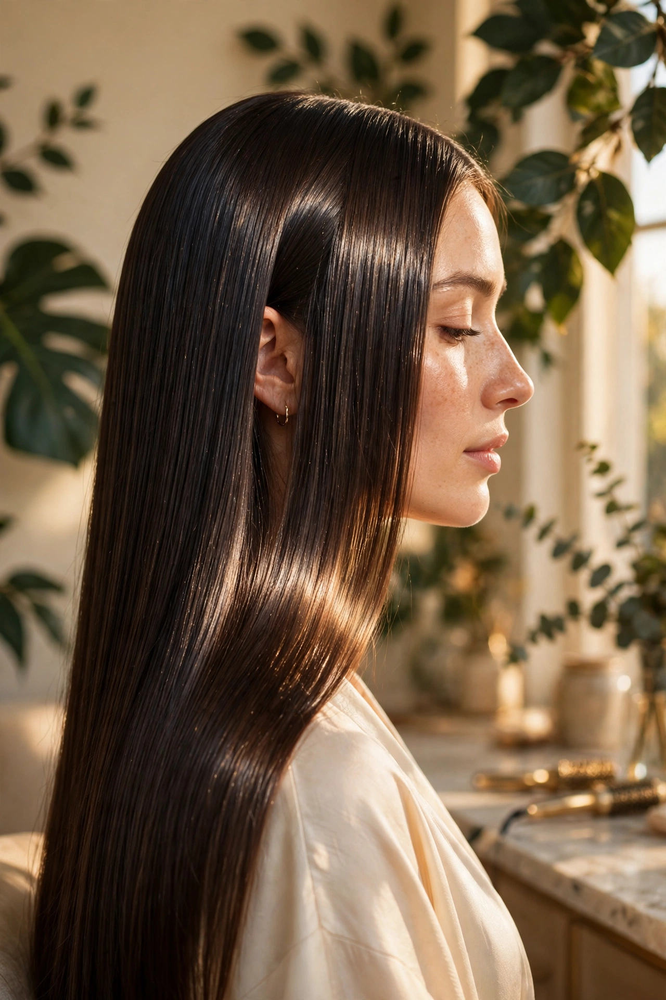

01
Sin formol, de verdad
La fórmula es 100% sin formol. Sin humos fuertes, sin ardor y sin exponer tu salud en la sesión.
El alisado orgánico
Nuestro alisado orgánico es un tratamiento sin formol que alisa el cabello con fórmulas suaves y nutritivas. El resultado: un liso con caída natural, brillo espejo y un cabello que se siente sano al tacto — sin el maltrato de los alisados tradicionales.
01
La fórmula es 100% sin formol. Sin humos fuertes, sin ardor y sin exponer tu salud en la sesión.
02
El proceso se adapta a tu tipo de cabello y se hace paso a paso, con diagnóstico previo.
03
El sellado final deja el cabello liso, luminoso y con movimiento natural.
El proceso
Así trabajamos tu cabello en cada cita de alisado orgánico.
01
Revisamos tu cabello: textura, historial y lo que quieres lograr.
02
Limpieza profunda para que el tratamiento penetre como debe.
03
Aplicamos la fórmula orgánica mechón a mechón, con calma.
04
Sellamos el liso y el brillo para un acabado espejo.
05
Te explicamos cómo mantenerlo con los tónicos y cuidados del estudio.
Antes / después
Arrastra el control y mira el cambio: de cabello ondulado con frizz a liso espejo sin formol.

El acabado que buscamos en cada cita: liso, brillante y con caída natural.
Muestra generada con IA — fotos reales del estudio próximamente
La luz sobre el cabello liso: el brillo espejo se nota sin filtros.
Muestra generada con IA — fotos reales del estudio próximamenteRetoque de alisado en raíz
A medida que crece tu cabello, la raíz vuelve a su textura natural. El retoque de raíz mantiene el liso perfecto sin repetir todo el proceso completo.
La duración del alisado depende de tu tipo de cabello, su crecimiento y los cuidados en casa. En tu cita de diagnóstico te explicamos qué esperar y cómo cuidarlo para que te dure más.
Precio del alisado y del retoque: consultar por Messenger.
Preguntas frecuentes
Depende de tu tipo de cabello, su crecimiento y los cuidados en casa. En la cita de diagnóstico te decimos qué esperar en tu caso y cómo alargar el resultado.
No. Nuestro alisado es 100% sin formol: una fórmula orgánica pensada para alisar sin maltratar tu cabello ni tu salud.
Sí, a medida que crece el cabello la raíz recupera su textura natural. El retoque mantiene el liso sin repetir el proceso completo.
Te damos las indicaciones en tu cita, incluido el uso de los tónicos capilares Fórmula de la Abuela (romero y manzanilla) y los productos recomendados por el estudio.
El precio depende de tu cabello (largo, cantidad y estado). Escríbenos por Facebook Messenger y te damos el valor para tu caso: precio a consultar.